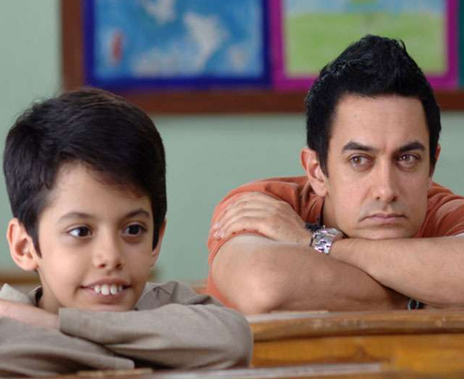

Responsive relationships matter
Children benefit from caregivers who notice, understand and respond to their needs.
Research from global health and child-development organisations highlights the importance of responsive caregiving, safety, health, learning and supportive relationships.
Children under 5 estimated by WHO to be at risk of not reaching their developmental potential due to poverty.
WHO notes that every $1 invested in early childhood development interventions can return up to $13.
The early years are an especially important period for development and nurturing care.
Health, nutrition, safety and security, responsive caregiving, and early learning.
Healthy development is not built from one factor alone.
This visual represents a relationship between supportive experiences and developmental outcomes. It is a conceptual model, not a measured statistical graph.
A supportive adult listens, reassures and helps the child understand the situation.
Ongoing stress without a supportive adult can become more difficult for a child to manage.

Children benefit from caregivers who notice, understand and respond to their needs.
A caring adult can help a child cope with stressful experiences.
The early years provide an important foundation for healthy development and learning.